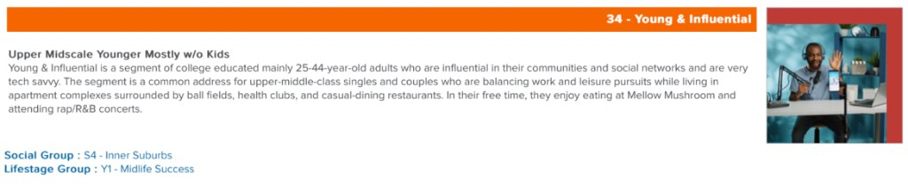
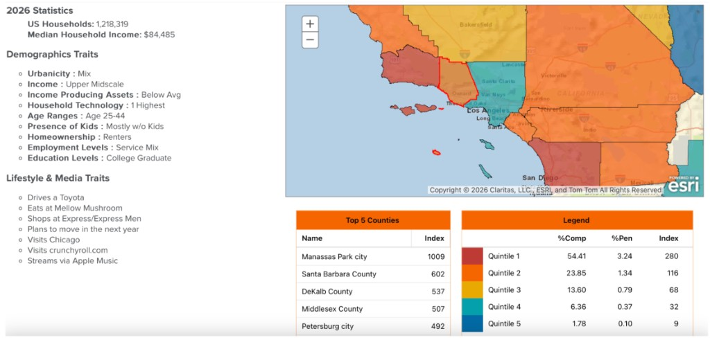
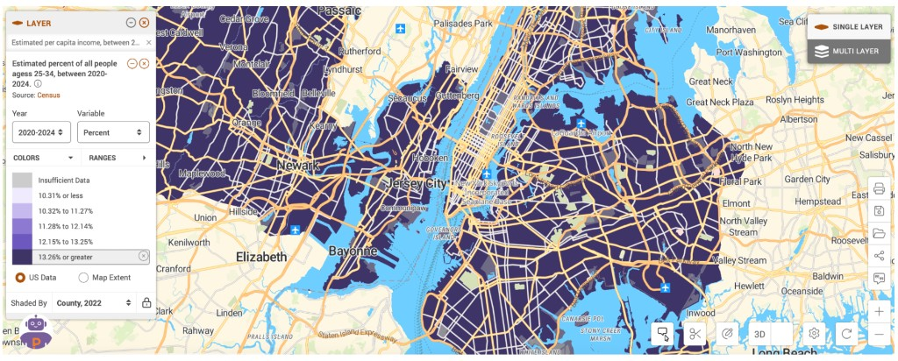
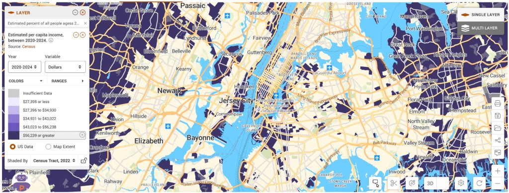
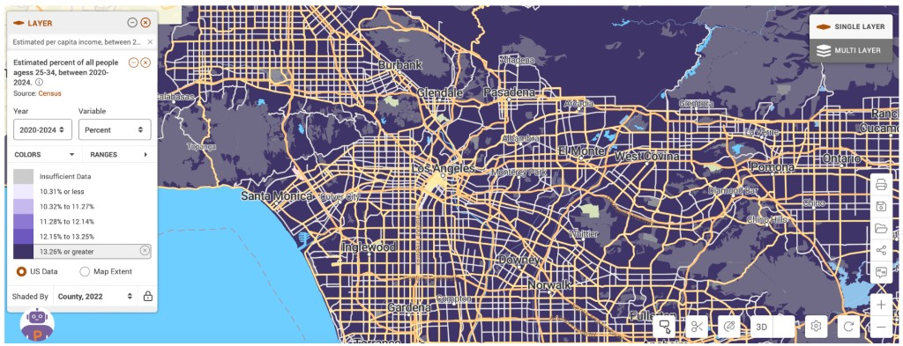
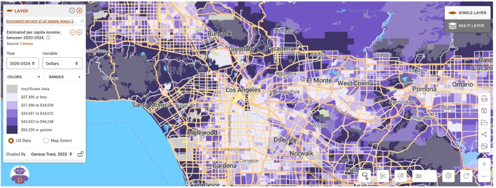

Figures 1 & 2 — Claritas Segment Profile
Claritas identifies our target market as individuals who have received a college education and fall roughly between the ages of 25 and 44 years old. They are displayed as individuals who are "tech-savvy" and are influential through social media platforms. These individuals would typically already be users of other Apple products such as the iPhone and MacBook. They are typically upper-middle class singles or coupled individuals without children. This group typically likes the aesthetic of having a product like this and enjoys creating content using these types of more niche products. Also caring about self image and being health conscious, this market demographic represents the individuals worth targeting with this type of product.

Figure 2 — Demographics & Lifestyle Traits
Claritas identifies our target market as individuals who have received a college education and fall roughly between the ages of 25 and 44 years old. They are displayed as individuals who are "tech-savvy" and are influential through social media platforms. These individuals would typically already be users of other Apple products such as the iPhone and MacBook. They are typically upper-middle class singles or coupled individuals without children. This group typically likes the aesthetic of having a product like this and enjoys creating content using these types of more niche products. Also caring about self image and being health conscious, this market demographic represents the individuals worth targeting with this type of product.

Figure 3 — NYC Age Distribution (Policy Map)
This first Policy Map image shows areas shaded in dark purple that represent where more than 13.26% of the population around or in New York City is between the ages of 25 and 34 between the years of 2020 and 2024 according to the US Census.

Figure 4 — NYC Per Capita Income (Policy Map)
This next Policy Map image shows areas shaded in dark purple that represent where the estimated per capita income is greater than $56,239 in or around New York City between the years of 2020 and 2024.

Figure 5 — LA Age Distribution (Policy Map)
This Policy Map image shows areas shaded in dark purple that represent where more than 13.26% of the population around or in Los Angeles is between the ages of 25 and 34 between the years of 2020 and 2024 according to the US Census.

Figure 6 — LA Per Capita Income (Policy Map)
This next Policy Map image shows areas shaded in dark purple that represent where the estimated per capita income is greater than $56,239 in or around Los Angeles between the years of 2020 and 2024.
Target Map Explaination
The reason that these particular Policy Map demographics and shaded areas are of importance is because major cities like New York City and Los Angeles consist of large varieties of individuals, and these demographics serve as sizable portions of individuals within these cities. For example, although Los Angeles is a major city with plenty of diversity, this is one of the most popular cities for social media influencers to reside in, and those individuals fall within the demographics that are shown here and our target market. New York City is similar in this way, but is larger in population and more diverse as well, leading to New York City being another important location for exploiting the market. This can be seen on the Policy Map images as well.